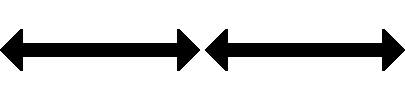
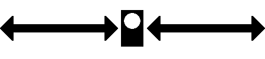

02 Beschreibung Mit der Mundpfeife oder dem Horn: Zwei kurze Töne schnell nacheinander. Und mit dem Arm: Tageszeichen: Beide Arme in Schulterhöhe nach vorn heben und die flach ausgestreckten Hände wiederholt einander nähern.  Nachtzeichen: Wie am Tage, in der Hand eine Laterne. 
03 Anwendung Das Signal bedeutet, das Triebfahrzeug soll Fahrzeuge zum An- oder Abkuppeln usw. aufdrücken.